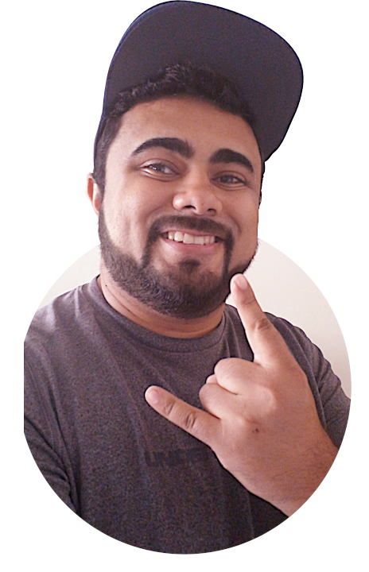

Wellison M. Dias
Estudante de Desenvolvimento Web Fullstack
Olá, sou o Wellison (/ué-li-som/), arquiteto em transição de carreira para área de tecnologia. Estudo programação a pouco mais de 1 ano e atualmente ingressei na formação fullstack web developer da Trybe.
.Bio
Iniciei meus estudos na Trybe no dia 04 de novembro de 2022 com muito entusiasmo e sede de aprender mais sobre tecnologia. Nos primeiros dias de aprendizado revisitei meus antigos conhecimentos em sistemas Unix, Git e Github, prosseguindo com mais um pouco de revisão em conceitos básicos de HTML5 e CSS3. Durante esse período conheci muitas pessoas legais e, assim como eu, empolgadas com o curso e que espero que se tornem amizades de longa data. Nesse período também aprendi e evoluí minhas soft-skills como Pra concluir, #VQV!.